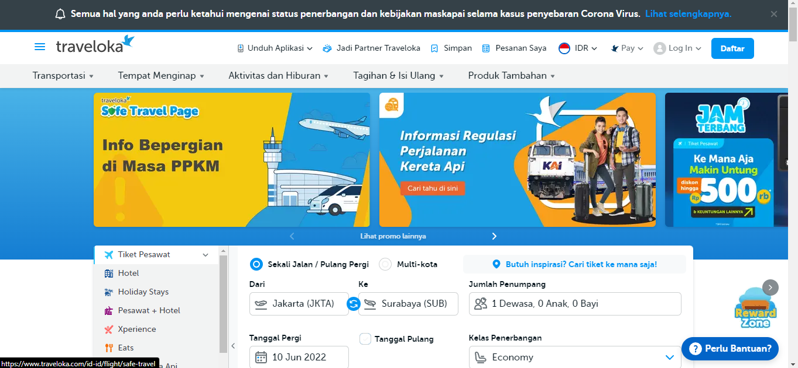
Traveloka adalah perusahaan yang menyediakan layanan pemesanan tiket pesawat dan hotel secara daring dengan fokus perjalanan domestik di Indonesia. Didirikan pada tahun 2012 oleh Ferry Unardi, Derianto Kusuma, dan Albert Zhang. Traveloka yang merupakan salah satu perusahaan rintisan (startup) berstatus unicorn asal Indonesia ini mengembangkan layanannya pada pemesanan tiket kereta api, bus, penyewaan mobil, hingga aktivitas wisata. Sejak tahun 2015, Traveloka mulai berekspansi ke sejumlah negara di Asia Tenggara seperti Singapura, Malaysia, Vietnam, Thailand, dan Filipina.
Mekanisme Pemesanan
Pertama kita harus login terlebih dahulu.
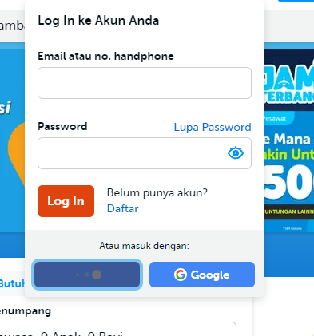
Disini saya menggunakan facebook untuk login.
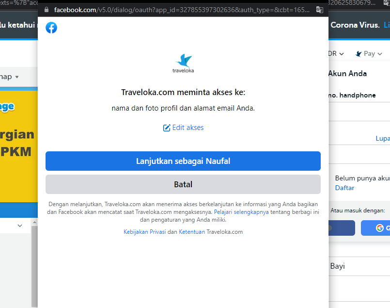
Setelah masuk kita bisa langsung memesan berbagai kebutuhan traveling, misal adalah hotel.
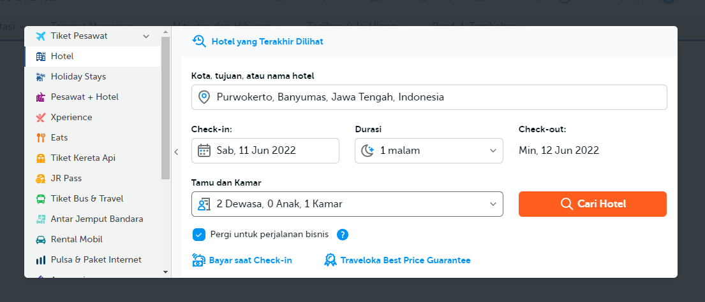
Kemudia kita ditunjukan berbagai pilihan setelah mencari tujuan kita.
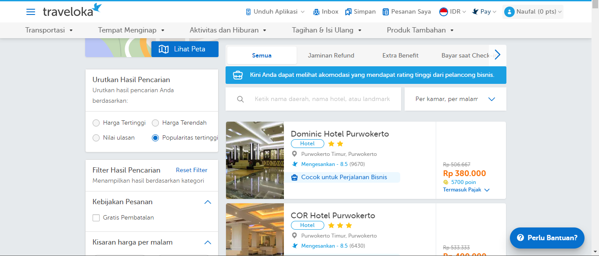
Kita mengisi data diri untuk melanjutkan transaksi.
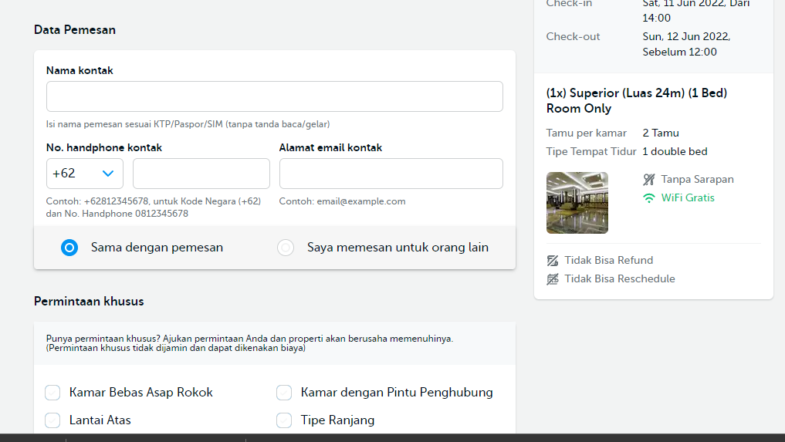
Mekanisme Distribusi
Distribusi tiketnya adalah menggunakan e-ticket dari traveloka.
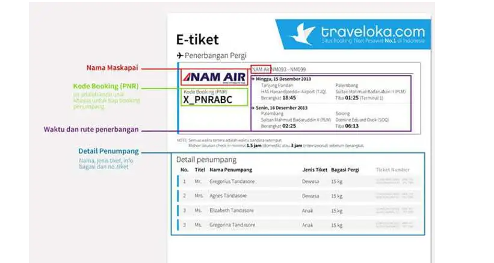
Mekanisme Pembayaran
Ada beberapa metode pembayaran yang disediakan.
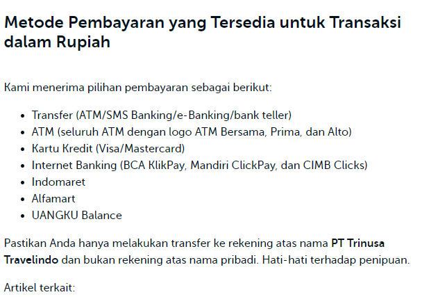
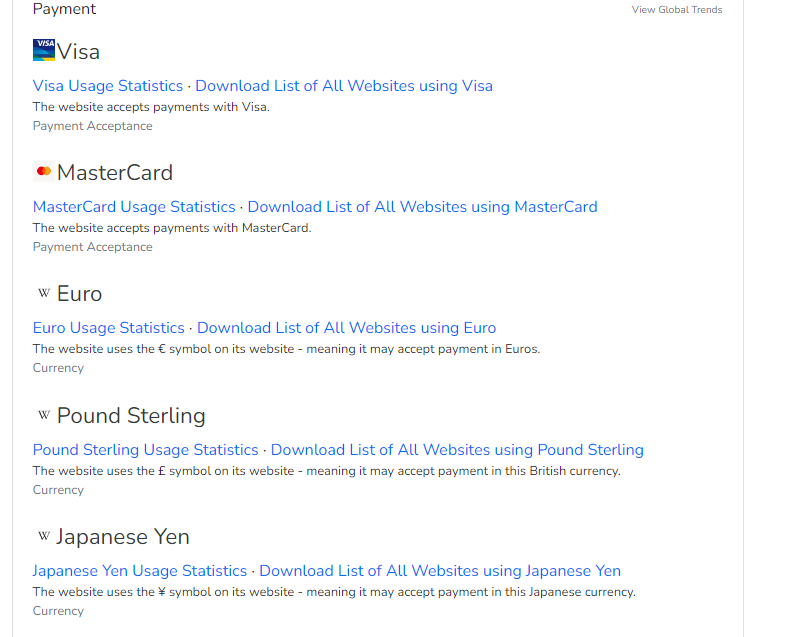
Teknologi yang digunakan Traveloka
Berikut ini adalah beberapa teknologi yang digunakan Traveloka.
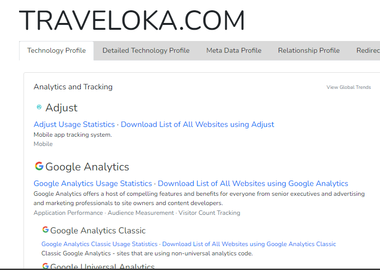
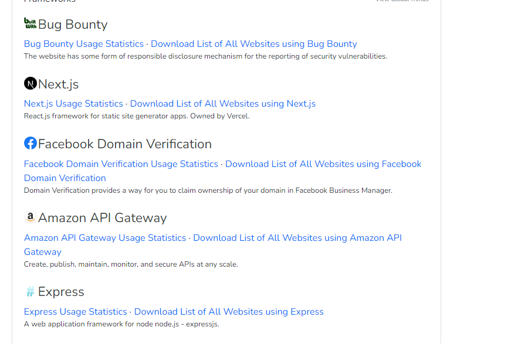